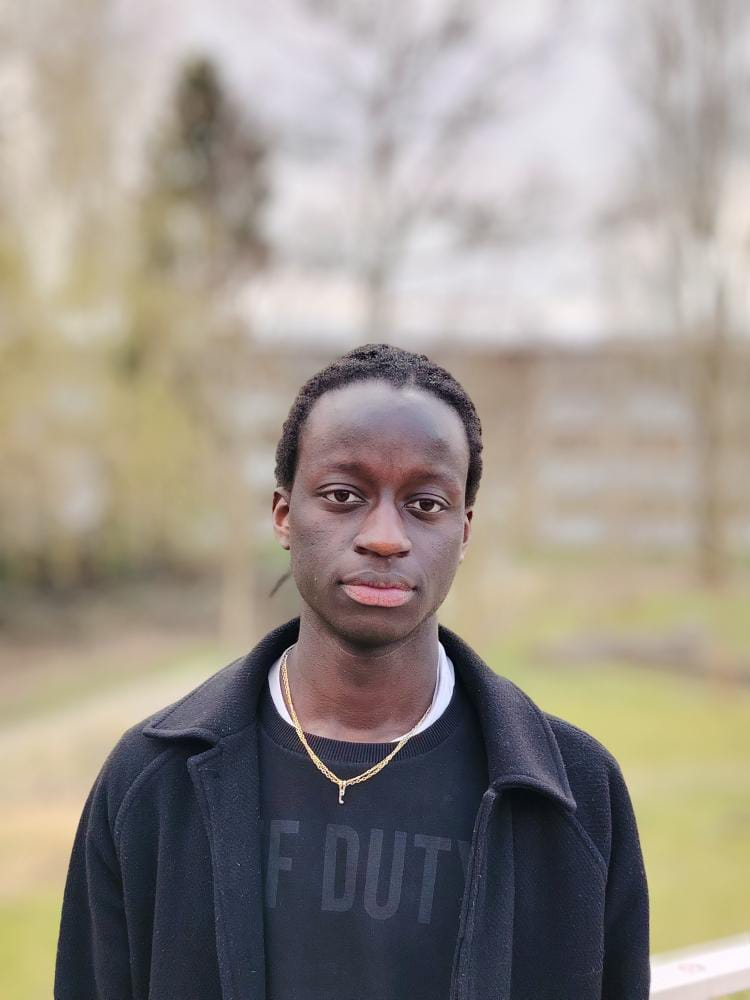

Jean Joris BIGIRIMANA
Technicien supérieur
👋 Bonjour et bienvenue sur mon portfolio !
Étudiant·e en BUT Informatique, je suis passionné·e par les technologies et curieux·se d’en apprendre toujours plus. J’ai créé ce site pour partager mon parcours, mes projets, et les compétences que j’ai acquises.
Président·e du Bureau des Étudiants, cette expérience m’a beaucoup appris en organisation, communication et travail d’équipe.
Souriant·e, engagé·e et motivé·e, je vous invite à parcourir ce portfolio pour mieux comprendre qui je suis et ce que je peux apporter. Bonne visite !